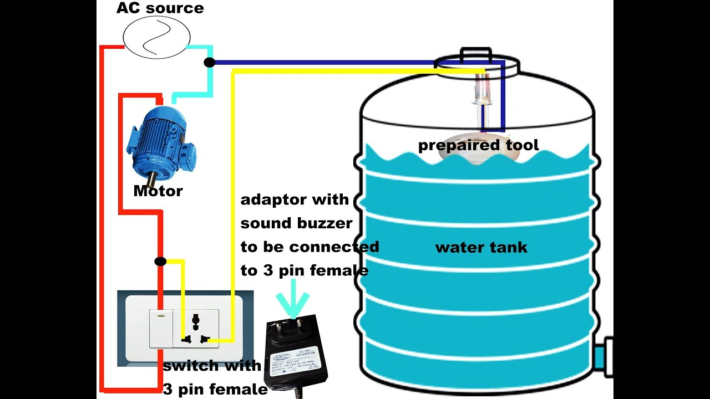

Project Name1April 2020Project About HOUSE LOCK MONITORING using IOT and AI.Face recognition system will identify the person digital image from a camera source. Then it matches the person digital image in the data base. If third person what to enter in home then he/she have to use manual lock. When third person uses manual lock then authorised person should get the message.
|
|
|  |
Project Name2December 2018
Project About SMART WATER TANK.The main aim of this project is to save water from overflowin water tank and gives thenotification to the user to control overflow. |